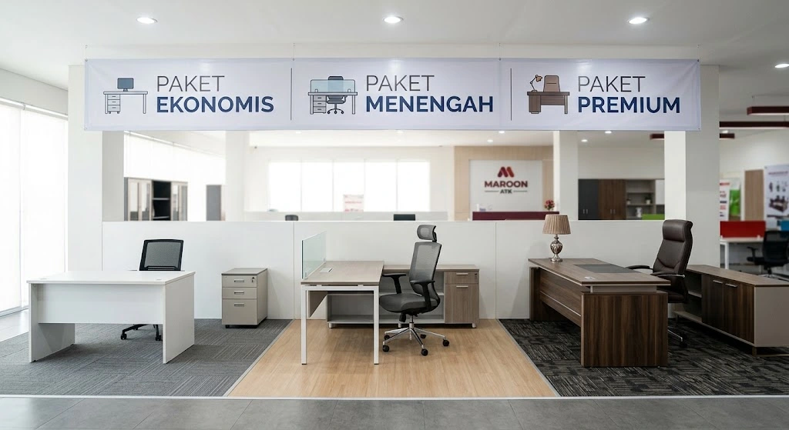

Harga paket furniture kantor dipengaruhi oleh jumlah workstation, jenis material, kompleksitas desain, serta layanan tambahan seperti instalasi dan pengiriman. Memahami faktor-faktor ini membantu perusahaan skala menengah menyusun anggaran ekspansi ruangan tanpa risiko overbudget di tengah proses pengadaan.
Apa yang Memengaruhi Harga Paket Furniture Kantor?
Harga paket furniture kantor dipengaruhi oleh beberapa faktor utama, yaitu jumlah unit yang dibutuhkan, jenis material yang digunakan, kompleksitas desain, serta layanan tambahan seperti pengiriman dan instalasi di lokasi.
Semakin banyak workstation yang dibutuhkan dan semakin kompleks desain yang diinginkan, umumnya semakin tinggi pula total biaya paket furniture yang harus dianggarkan perusahaan. Cek juga berbagai pilihan bundling pengadaan ruang kerja di katalog paket pengadaan kantor MAROON ATK.
Apa Saja Tingkatan Paket Furniture Kantor yang Umum Ditawarkan?
Paket furniture kantor umumnya ditawarkan dalam beberapa tingkatan yang disesuaikan dengan kebutuhan dan anggaran perusahaan.
| Tingkatan Paket | Karakteristik Material | Cocok Untuk |
|---|---|---|
| Ekonomis | Material standar, desain fungsional dasar | Startup atau ekspansi ruang kerja sederhana |
| Menengah | Material lebih tahan lama, desain lebih variatif | Perusahaan skala menengah dengan kebutuhan jangka panjang |
| Premium | Material pilihan, finishing dan garansi lebih lengkap | Ruang kerja korporat atau ruang tamu klien representatif |
Pemilihan tingkatan paket sebaiknya disesuaikan dengan kebutuhan fungsional ruangan serta citra perusahaan yang ingin ditampilkan kepada karyawan maupun klien.

Bagaimana Cara Menghitung Estimasi Anggaran Furniture untuk Ekspansi Kantor?
Estimasi anggaran furniture dihitung dengan mengalikan jumlah workstation yang dibutuhkan dengan skema paket yang dipilih, kemudian menambahkan biaya layanan pendukung seperti pengiriman dan instalasi di lokasi baru.
Menentukan Jumlah Workstation yang Dibutuhkan
Jumlah workstation ditentukan berdasarkan rencana penambahan karyawan dan tata letak ruangan yang tersedia. Perhitungan ini sebaiknya mempertimbangkan proyeksi kebutuhan beberapa tahun ke depan, bukan hanya kondisi saat ini, agar tidak perlu melakukan pengadaan ulang dalam waktu dekat. Pelajari panduan alur lelang dan kontrak vendor di SOP pengadaan furniture kantor B2B.
Memilih Material Sesuai Anggaran
Setelah jumlah workstation ditentukan, langkah berikutnya adalah memilih tingkatan material yang sesuai dengan anggaran yang tersedia, tanpa mengorbankan kenyamanan dasar karyawan seperti ergonomi kursi kerja.
Apa Risiko Overbudget dalam Pengadaan Furniture Kantor dan Cara Menghindarinya?
Risiko utama overbudget adalah perubahan spesifikasi di tengah proses pengadaan tanpa persetujuan anggaran tambahan, serta tidak membandingkan beberapa penawaran vendor sebelum memutuskan kerja sama.
Cara menghindarinya adalah menetapkan spesifikasi final sebelum proses pengadaan dimulai, meminta beberapa penawaran pembanding dari vendor berbeda, serta mengalokasikan dana cadangan kecil untuk kebutuhan tak terduga seperti biaya pengiriman tambahan.
Mengapa Memilih Paket Furniture Kantor dari Maroon ATK?
MAROON ATK berpengalaman menyuplai kebutuhan furniture dan ATK ke lebih dari 150 instansi pemerintah dan perusahaan swasta di Jabodetabek dengan keakuratan pengiriman barang mencapai 99,8 persen (data internal Maroon ATK, 2026), sehingga perusahaan dapat merencanakan ekspansi ruang kerja dengan lebih tenang tanpa khawatir keterlambatan.
Selain pengiriman yang terjadwal, tim Maroon ATK dapat membantu menyusun simulasi anggaran sesuai jumlah workstation dan tingkatan paket yang dipilih, sehingga perusahaan mendapatkan gambaran biaya yang lebih realistis sebelum menyepakati kerja sama.
Kesimpulan
- Dasar perhitungan: Perhitungkan jumlah workstation dan tingkatan material sebagai fondasi estimasi anggaran furniture kantor.
- Pilih paket yang tepat: Tentukan tingkatan paket (ekonomis, menengah, premium) sesuai fungsi ruang dan kemampuan finansial kantor.
- Hitung biaya total: Sertakan biaya pengiriman, perakitan, dan instalasi dalam estimasi anggaran, bukan hanya harga unit barang.
- Kunci spesifikasi awal: Hindari perubahan spesifikasi mendadak di tengah proses eksekusi agar alokasi dana tidak membengkak.
- Minta quotation resmi: Ajukan permintaan penawaran resmi ke Maroon ATK untuk memperoleh kalkulasi biaya yang akurat dan transparan.
Pertanyaan yang Sering Diajukan (FAQ)
Harga dipengaruhi oleh jumlah workstation, jenis material yang dipilih, kompleksitas desain, serta layanan tambahan seperti instalasi dan pengiriman ke lokasi.
Paket ekonomis menggunakan material standar untuk kebutuhan dasar, paket menengah menawarkan material lebih tahan lama dengan desain lebih variatif, sementara paket premium menggunakan material pilihan dengan finishing dan garansi lebih lengkap.
Estimasi anggaran dihitung dengan mengalikan jumlah workstation yang dibutuhkan dengan skema paket yang dipilih, kemudian menambahkan biaya layanan pendukung seperti pengiriman dan instalasi.
Risiko utamanya adalah perubahan spesifikasi di tengah proses tanpa persetujuan anggaran tambahan serta tidak membandingkan beberapa penawaran vendor sebelum memutuskan.
Cara paling akurat adalah mengajukan permintaan penawaran resmi (quotation) kepada vendor dengan menyertakan jumlah workstation dan spesifikasi kebutuhan secara rinci melalui WhatsApp resmi MAROON ATK di 0889-8964-3555.

Ridhan Fahri
Spesialis pengadaan furniture kantor B2B di MAROON ATK, berpengalaman menyusun perencanaan anggaran ruang kerja, pemilihan material ergonomis tahan lama, dan standarisasi workstation perusahaan modern.